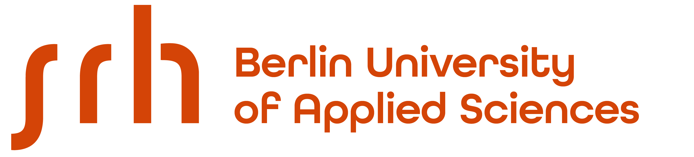
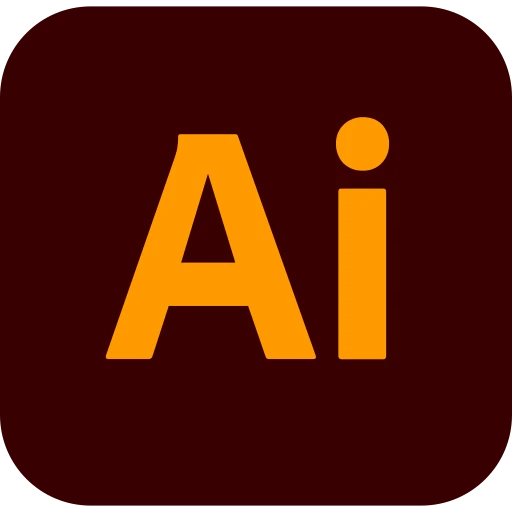
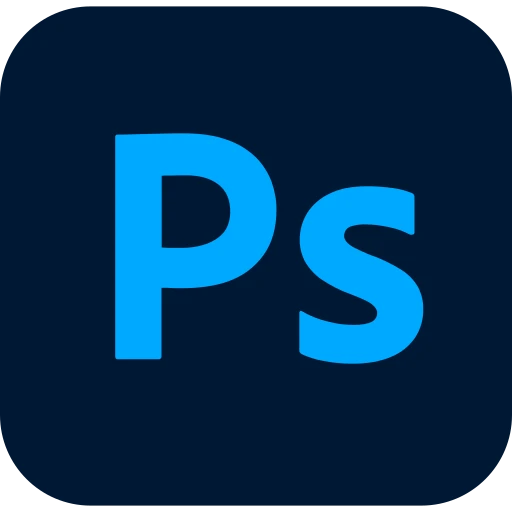
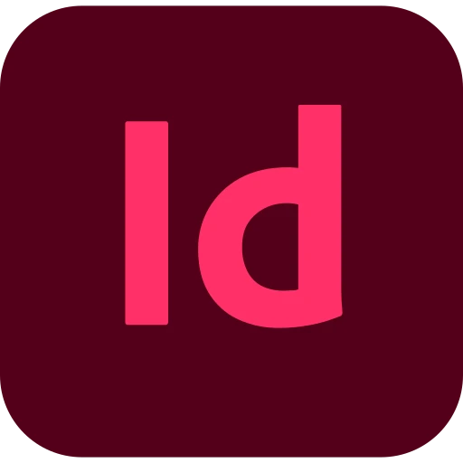
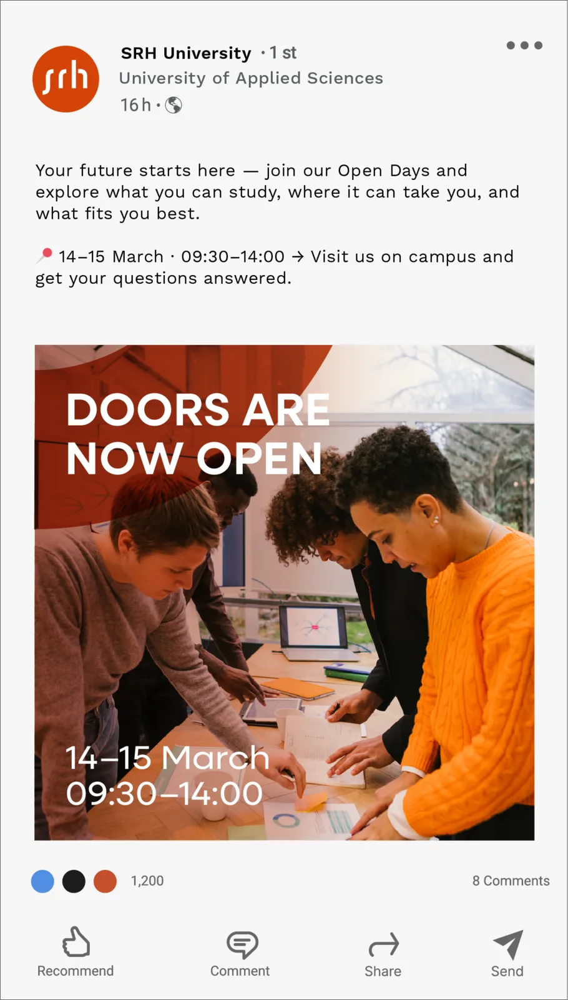
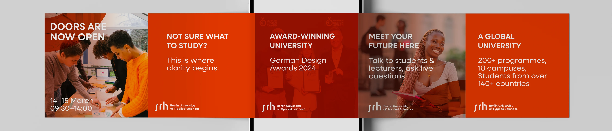
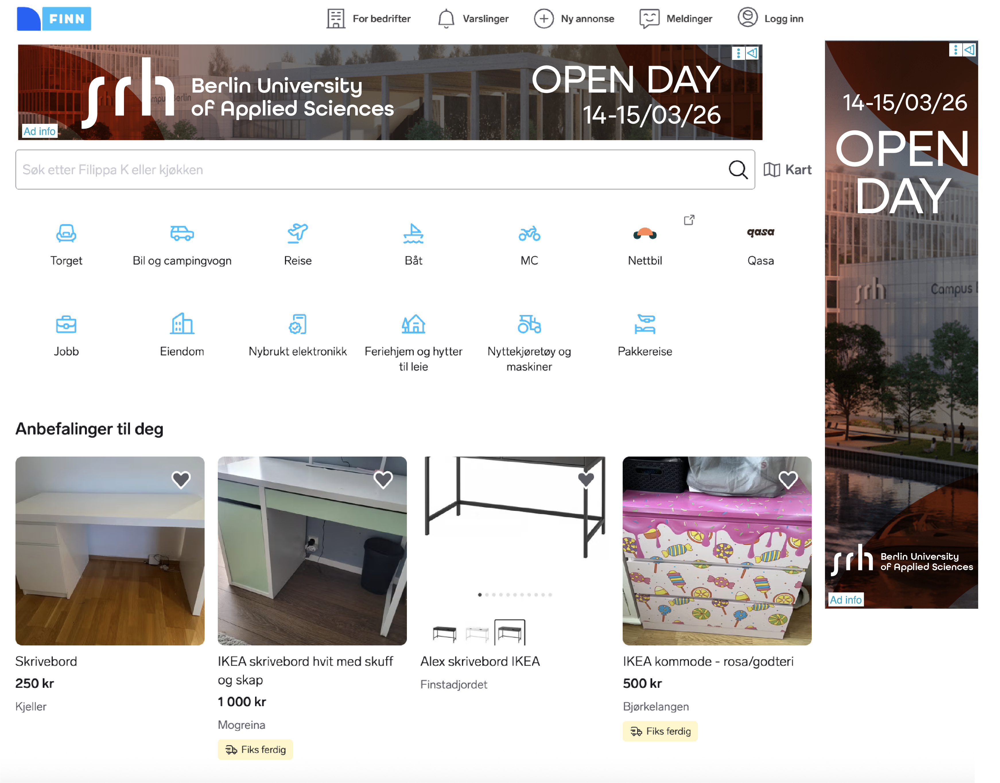
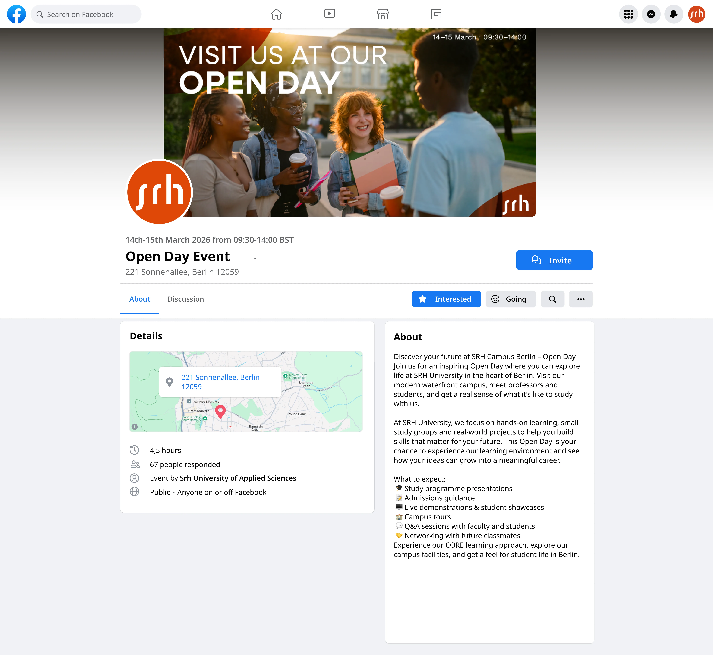

Oppgave
IDG1009 Flerkanalpublisering
Høst 2024
Verktøy
 Figma
Figma

Illustrator
Photoshop
IndesignI faget flerkanalspublisering fikk vi i oppgave å designe for en valgfri bedrift. Jeg valgte SRH University of Applied Sciences fordi det er en skole jeg har vært interessert i å dra på utveksling til, og som jeg synes har et spennende og visuelt tiltalende miljø.
Oppgaven har vært å utvikle una visuell kommunikasjonsløsning for et arrangement på tvers av flere medier. Prosjektet tar utgangspunkt i Open Day ved SRH Campus Berlin, og bruker arrangementet som et case for å utforske et tydelig visuelt uttrykk gjennom struktur, hierarki og konsistente designprinsipper.
Brosjyre
Brosjyren skiller seg litt ut ved at den fokuserer på skolens bærekraftstiltak. Jeg valgte et minimalistisk uttrykk, der målet er å gi una kort introduksjon og heller lede videre til mer detaljert informasjon på deres egen nettside.
Nettside (event)
Nettsiden er holdt veldig enkel, med fokus på å formidle informasjon om arrangementet på en rask og oversiktlig måte. Den er laget for at brukeren raskt skal forstå hva, hvor og når. Åpne nettsiden ↗︎
Buss-reklame, rollupbanner og plakat
Plakaten er designet for å fange oppmerksomhet raskt og formidle Open Day på en tydelig måte. Jeg har tatt inspirasjon fra skolens visuelle uttrykk og min egen interesse for designfagene de tilbyr.
Rollup-banneret er laget for å fungere i fysiske omgivelser, med et enkelt og tydelig budskap som er lett å få med seg på avstand. Designet følger samme visuelle retning som resten av konseptet.
LinkedIn-karusell


Carousel-designet er mer informasjonsbasert, med mindre bruk av bilder og tydelig hvit tekst på SRHs oransje farge. Her er det viktig at budskapet kommer klart frem i una profesjonell kontekst.
Reklamebanner

Reklamebanneret er ganske enkelt og direkte, med fokus på å kommunisere arrangementet raskt uten for mye distraksjon.
Facebook event

Facebook-eventet er også holdt enkelt, med tydelig informasjon om arrangementet.
Fontvalg
OPQRSTUVWXYZÆØÅ
opqrstuvwxyzæøå
OPQRSTUVWXYZÆØÅ
opqrstuvwxyzæøå
Logoen benytter All Round Gothic – Demi, da denne ligger nærmest typografien brukt på den originale nettsiden og tilhørende flater. For resten av den visuelle identiteten er Neulis Sans valgt i vektene Medium og Regular, for å skape una mer lesbar og moderne typografisk helhet.
I førsteutkastet, se srh_pdf.pdf ble All Round Gothic brukt gjennomgående i hele designet. Dette viste seg imidlertid å fungere mindre godt, da fonten blir for dominerende i lengre tekstmengder og svekker lesbarheten. I tillegg opplevdes den beige fargepaletten som lite treffsikker, da den ikke i tilstrekkelig grad støttet opp under det visuelle uttrykket og identiteten som ønskes formidlet.
Fargepalett
HEX: #971b14
RGB: 151, 27, 20
CMYK: 21, 98, 100, 26
HEX: #cb5b26
RGB: 203, 91, 38
CMYK: 12, 74, 96, 2
HEX: #1a1a1a
RGB: 26, 26, 26
CMYK: 73, 67, 66, 80
HEX: #707070
RGB: 112, 112, 112
CMYK: 0, 0, 0, 56
HEX: #ffffff
RGB: 255, 255, 255
CMYK: 0, 0, 0, 0